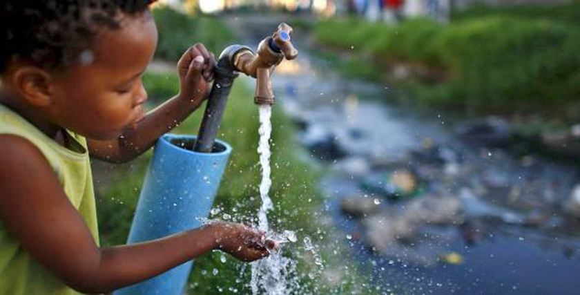

Proveer los servicios de agua potable, alcantarillado y saneamiento en forma eficiente e incluyente para todos los sectores de la población, orientando sus esfuerzos al desarrollo integral y sustentable de Guatemala, a través del impulso de proyectos estratégicos en el sector, sin comprometer los recursos naturales y fomentando una cultura de uso racional del vital líquido, que permita mejorar la calidad de los usuarios, dentro de un marco de legalidad, democracia y convivencia armónica.